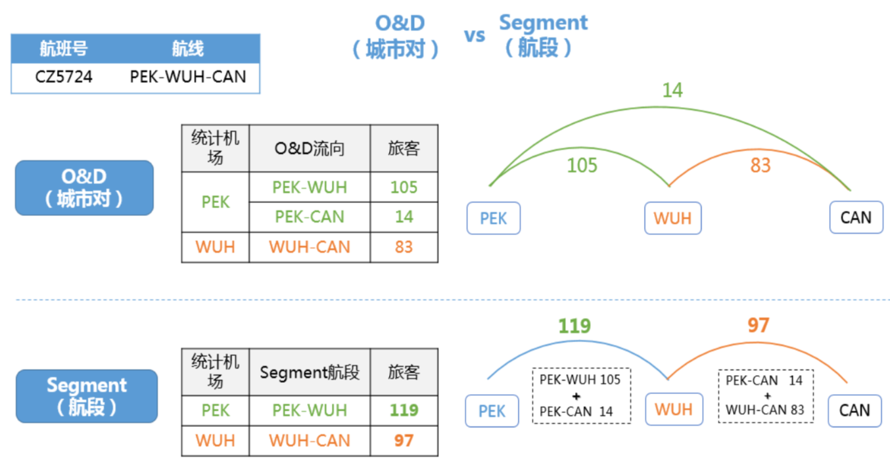

- 001 「战略篇」访谈 DDD 和微服务是什么关系？.md.html
- 002 「战略篇」开篇词：领域驱动设计，重焕青春的设计经典.md.html
- 003 领域驱动设计概览.md.html
- 004 深入分析软件的复杂度.md.html
- 005 控制软件复杂度的原则.md.html
- 006 领域驱动设计对软件复杂度的应对（上）.md.html
- 007 领域驱动设计对软件复杂度的应对（下）.md.html
- 008 软件开发团队的沟通与协作.md.html
- 009 运用领域场景分析提炼领域知识（上）.md.html
- 010 运用领域场景分析提炼领域知识（下）.md.html
- 011 建立统一语言.md.html
- 012 理解限界上下文.md.html
- 013 限界上下文的控制力（上）.md.html
- 014 限界上下文的控制力（下）.md.html
- 015 识别限界上下文（上）.md.html
- 016 识别限界上下文（下）.md.html
- 017 理解上下文映射.md.html
- 018 上下文映射的团队协作模式.md.html
- 019 上下文映射的通信集成模式.md.html
- 020 辨别限界上下文的协作关系（上）.md.html
- 021 辨别限界上下文的协作关系（下）.md.html
- 022 认识分层架构.md.html
- 023 分层架构的演化.md.html
- 024 领域驱动架构的演进.md.html
- 025 案例 层次的职责与协作关系（图文篇）.md.html
- 026 限界上下文与架构.md.html
- 027 限界上下文对架构的影响.md.html
- 028 领域驱动设计的代码模型.md.html
- 029 代码模型的架构决策.md.html
- 030 实践 先启阶段的需求分析.md.html
- 031 实践 先启阶段的领域场景分析（上）.md.html
- 032 实践 先启阶段的领域场景分析（下）.md.html
- 033 实践 识别限界上下文.md.html
- 034 实践 确定限界上下文的协作关系.md.html
- 035 实践 EAS 的整体架构.md.html
- 036 「战术篇」访谈：DDD 能帮开发团队提高设计水平吗？.md.html
- 037 「战术篇」开篇词：领域驱动设计的不确定性.md.html
- 038 什么是模型.md.html
- 039 数据分析模型.md.html
- 040 数据设计模型.md.html
- 041 数据模型与对象模型.md.html
- 042 数据实现模型.md.html
- 043 案例 培训管理系统.md.html
- 044 服务资源模型.md.html
- 045 服务行为模型.md.html
- 046 服务设计模型.md.html
- 047 领域模型驱动设计.md.html
- 048 领域实现模型.md.html
- 049 理解领域模型.md.html
- 050 领域模型与结构范式.md.html
- 051 领域模型与对象范式（上）.md.html
- 052 领域模型与对象范式（中）.md.html
- 053 领域模型与对象范式（下）.md.html
- 054 领域模型与函数范式.md.html
- 055 领域驱动分层架构与对象模型.md.html
- 056 统一语言与领域分析模型.md.html
- 057 精炼领域分析模型.md.html
- 058 彩色 UML 与彩色建模.md.html
- 059 四色建模法.md.html
- 060 案例 订单核心流程的四色建模.md.html
- 061 事件风暴与业务全景探索.md.html
- 062 事件风暴与领域分析建模.md.html
- 063 案例 订单核心流程的事件风暴.md.html
- 064 表达领域设计模型.md.html
- 065 实体.md.html
- 066 值对象.md.html
- 067 对象图与聚合.md.html
- 068 聚合设计原则.md.html
- 069 聚合之间的关系.md.html
- 070 聚合的设计过程.md.html
- 071 案例 培训领域模型的聚合设计.md.html
- 072 领域模型对象的生命周期-工厂.md.html
- 073 领域模型对象的生命周期-资源库.md.html
- 074 领域服务.md.html
- 075 案例 领域设计模型的价值.md.html
- 076 应用服务.md.html
- 077 场景的设计驱动力.md.html
- 078 案例 薪资管理系统的场景驱动设计.md.html
- 079 场景驱动设计与 DCI 模式.md.html
- 080 领域事件.md.html
- 081 发布者—订阅者模式.md.html
- 082 事件溯源模式.md.html
- 083 测试优先的领域实现建模.md.html
- 084 深入理解简单设计.md.html
- 085 案例 薪资管理系统的测试驱动开发（上）.md.html
- 086 案例 薪资管理系统的测试驱动开发（下）.md.html
- 087 对象关系映射（上）.md.html
- 088 对象关系映射（下）.md.html
- 089 领域模型与数据模型.md.html
- 090 领域驱动设计对持久化的影响.md.html
- 091 领域驱动设计体系.md.html
- 092 子领域与限界上下文.md.html
- 093 限界上下文的边界与协作.md.html
- 094 限界上下文之间的分布式通信.md.html
- 095 命令查询职责分离.md.html
- 096 分布式柔性事务.md.html
- 097 设计概念的统一语言.md.html
- 098 模型对象.md.html
- 099 领域驱动设计参考过程模型.md.html
- 100 领域驱动设计的精髓.md.html
- 101 实践 员工上下文的领域建模.md.html
- 102 实践 考勤上下文的领域建模.md.html
- 103 实践 项目上下文的领域建模.md.html
- 104 实践 培训上下文的业务需求.md.html
- 105 实践 培训上下文的领域分析建模.md.html
- 106 实践 培训上下文的领域设计建模.md.html
- 107 实践 培训上下文的领域实现建模.md.html
- 108 实践 EAS 系统的代码模型.md.html
- 109 后记：如何学习领域驱动设计.md.html
- 捐赠
011 建立统一语言
统一语言是提炼领域知识的产出物，获得统一语言就是需求分析的过程，也是团队中各个角色就系统目标、范围与具体功能达成一致的过程。
使用统一语言可以帮助我们将参与讨论的客户、领域专家与开发团队拉到同一个维度空间进行讨论，若没有达成这种一致性，那就是鸡同鸭讲，毫无沟通效率，相反还可能造成误解。因此，在沟通需求时，团队中的每个人都应使用统一语言进行交流。
一旦确定了统一语言，无论是与领域专家的讨论，还是最终的实现代码，都可以通过使用相同的术语，清晰准确地定义领域知识。重要的是，当我们建立了符合整个团队皆认同的一套统一语言后，就可以在此基础上寻找正确的领域概念，为建立领域模型提供重要参考。
统一语言体现在两个方面：
- 统一的领域术语
- 领域行为描述
统一的领域术语
形成统一的领域术语，尤其是基于模型的语言概念，是沟通能够达成一致的前提。尤其是开发人员与领域专家之间，他们掌握的知识存在巨大的差异。善于技术的开发人员关注于数据库、通信机制、集成方式与架构体系，而精通业务的领域专家对这些却一窍不通，但他们在讲解业务知识时，使用各种概念如呼吸一般自然，这些对于开发人员来说，却成了天书，这种交流就好似使用两种不同语言的外国人在交谈。记得有一次我去洛杉矶出差，居住期间，需要到一家洗衣店干洗衣服，交付完衣服后，我想向洗衣店老板索要收据，以作为之后领取衣服的凭证。好不容易在我脑中贫瘠的英文词典里搜索到 receipt 这个词语，自以为正确，谁知道讲出来后老板一脸茫然，不是 receipt，那么是 ……invoice？手舞足蹈说了半天，老板才反应过来，递过来一张收据，嘴里吐出 ticket 这个词语，My God，受了中学英语的流毒，我还以为 ticket 这个词语只能用到电影院呢。
显然，从需求中提炼出统一语言，其实就是在两个不同的语言世界中进行正确翻译的过程。
某些领域术语是有行业规范的，例如财会领域就有标准的会计准则，对于账目、对账、成本、利润等概念都有标准的定义，在一定程度上避免了分歧。然而，标准并非绝对的，在某些行业甚至存在多种标准共存的现象。以民航业的运输统计指标为例，牵涉到与运量、运力以及周转量相关的术语，就存在 ICAO（International Civil Aviation Organization，国际民用航空组织）与IATA（International Air Transport Association，国际航空运输协会）两大体系，而中国民航局又有自己的中文解释，航空公司和各大机场亦有自己衍生的定义。
例如，针对一次航空运输的运量，就要分为城市对与航段的运量统计。城市对运量统计的是出发城市到目的城市两点之间的旅客数量，机场将其称之为流向。ICAO 定义的领域术语为 City-pair（OFOD），而 IATA 则命名为 O & D。航段运量又称为载客量，指某个特定航段上所承载的旅客总数量，ICAO将其定义为 TFS（Traffic by flight stage），而 IATA 则称为 Segment Traffic。
即使针对航段运量这个术语，我们还需要明确地定义这个运量究竟指的是载客量，还是包含了该航段上承载的全部旅客、货物与邮件数量；我们还需要明确城市对与航段之间的区别，它们在指标统计时，实则存在细微的差异，一不小心忽略，结果就可能谬以千里。以航班 CZ5724 为例，该航班从北京（目的港代码 PEK）出发，经停武汉（目的港代码 WUH）飞往广州（目的港代码 CAN）。假定从北京到武汉的旅客数为 105，从北京到广州的旅客数为 14，从武汉到广州的旅客数为 83，则统计该次航班的城市对运量，应该分为三个城市对分别统计，即统计 PEK-WUH、PEK-CAN、WUH-CAN。而航段运量的统计则仅仅分为两个航段 PEK-WUH 与 WUH-CAN，至于从北京到广州的 14 名旅客，这个数量值则被截分为了两段，分别计数，如下图所示：

显然，如果我们不明白城市对运量与航段运量的真正含义，就可能混淆这两种指标的统计计算规则。这种术语理解错误带来的缺陷往往难以发现，除非业务分析人员、开发人员与测试人员能就此知识达成一致的正确理解。
在领域建模过程中，我们往往需要在文档中建立一个大家一致认可的术语表。术语表中需要包括整个团队精炼出来的术语概念，以及对该术语的清晰明白的解释。若有可能，可以为难以理解的术语提供具体的案例。该术语表是领域建模的关键，是模型的重要参考规范，能够真实地反应模型的领域意义。一旦发生变更，也需要及时地对其进行更新。
在维护领域术语表时，一定需要给出对应的英文术语，否则可能直接影响到代码实现。在我们的一个产品开发中，根据需求识别出了“导入策略”的领域概念。由于这个术语非常容易理解，团队就此达成了一致，却没有明确给出英文名称，最后导致前端和后端在开发与“导入策略”有关的功能时，分别命名为 ImportingPolicy 与 ImportingStrategy，人为地制造了混乱。
即使术语的英语并不需要对外暴露给用户，我们仍然需要引起重视，就算不强调英文翻译的纯正，也必须保证概念的一致性，倘若认为英文表达不合理或者不标准，牵涉到对类、方法的重命名，则需要统一修改。在大数据分析领域中，针对“维度”与“指标”两个术语，我们在过去开发的产品中就曾不幸地衍生出了两套英文定义，分别为 Dimension 与 Metric，Category 与 Measure，这种混乱让整个团队的开发成员痛苦不堪，带来了沟通和交流的障碍。就我而言，我宁愿代码命名没有正确地表达领域概念，也不希望出现命名上的不一致性。倘若在建模之初就明确母语和英语的术语表达，就可以做到正本清源！
领域行为描述
从某种程度讲，领域行为描述可以视为领域术语甄别的一种延伸。领域行为是对业务过程的描述，相对于领域术语而言，它体现了更加完整的业务需求以及复杂的业务规则。在描述领域行为时，需要满足以下要求：
- 从领域的角度而非实现角度描述领域行为
- 若涉及到领域术语，必须遵循术语表的规范
- 强调动词的精确性，符合业务动作在该领域的合理性
- 要突出与领域行为有关的领域概念
例如，在项目管理系统中，倘若我们采用 Scrum 的敏捷项目管理流程，要描述 Sprint Backlog 的任务安排，则编写的用户故事如下所示：
作为一名Scrum Master，
我希望将Sprint Backlog分配给团队成员，
以便于明确Backlog的负责人并跟踪进度。
验收标准：
* 被分配的Sprint Backlog没有被关闭
* 分配成功后，系统会发送邮件给指定的团队成员
* 一个Sprint Backlog只能分配给一个团队成员
* 若已有负责人与新的负责人为同一个人，则取消本次分配
* 每次对Sprint Backlog的分配都需要保存以便于查询
用户故事中的分配（assign）Sprint Backlog 给团队成员就是一种领域行为，这种行为是在特定上下文中由角色触发的动作，并由此产生的业务流程和操作结果。同时，这种领域行为还是一种契约，明确地表达了服务提供者与消费者之间的业务关系，即明确了领域行为的前置条件、执行主语和宾语以及行为的执行结果，这些描述丰富了该领域的统一语言，并直接影响了 API 的设计。例如，针对分配 Sprint Backlog 的行为，用户故事就明确了未关闭的 SprintBacklog 只能分配给一个团队成员，且不允许重复分配，这体现了分配行为的业务规则。验收标准中提出对分配的保存，实际上也帮助我们得到了一个领域概念 SprintBacklogAssignment，该行为的代码实现如下所示：
package practiceddd.projectmanager.scrumcontext.domain;
import practiceddd.projectmanager.dddcore.Entity;
import practiceddd.projectmanager.scrumcontext.domain.exception.InvalidAssignmentException;
import practiceddd.projectmanager.scrumcontext.domain.exception.InvalidBacklogException;
import practiceddd.projectmanager.scrumcontext.domain.role.MemberId;
import practiceddd.projectmanager.scrumcontext.domain.role.TeamMember;
public class SprintBacklog extends Entity<BacklogId> {
private String title;
private String description;
private BacklogStatus backlogStatus;
private MemberId ownerId;
public SprintBacklog(BacklogId backlogId, String title, String description) {
if (title == null) {
throw new InvalidBacklogException("the title of backlog can't be null");
}
this.id = backlogId;
this.title = title;
this.description = description;
this.backlogStatus = new NewBacklogStatus();
}
public SprintBacklogAssignment assignTo(TeamMember assignee) {
if (this.backlogStatus.isClosed()) {
throw new InvalidAssignmentException(
String.format("The closed sprint backlog %s can not be assigned to %s.", this.title, assignee.getName()));
}
if (assignee.isSame(this.ownerId)) {
throw new InvalidAssignmentException(
String.format("The sprint backlog %s not allow to assign to same team member %s.", this.title, assignee.getName()));
}
return new SprintBacklogAssignment(this.id, assignee.id());
}
}
基于“信息专家模式”，SprintBacklog 类的 assignTo() 方法只承担了它能够履行的职责。作为 SprintBacklog 对象自身，它知道自己的状态，知道自己是否被分配过，分配给谁，也知道遵循不同的业务规则会导致产生不同的结果。但由于它不具备发送邮件的知识，针对邮件发送它就无能为力了，因此这里实现的 assignTo() 方法仅仅完成了部分领域行为，若要完成整个用户故事描述的业务场景，需要交给领域服务 AssignSprintBacklogService 来完成：
package practiceddd.projectmanager.scrumcontext.domain;
import org.springframework.beans.factory.annotation.Autowired;
import org.springframework.stereotype.Service;
import practiceddd.projectmanager.scrumcontext.domain.role.TeamMember;
import practiceddd.projectmanager.scrumcontext.interfaces.notification.NotificationService;
@Service
public class AssignSprintBacklogService {
@Autowired
private SprintBacklogRepository backlogRepository;
@Autowired
private SprintBacklogAssignmentRepository assignmentRepository;
@Autowired
private NotificationService notificationService;
public void assign(SprintBacklog backlog, TeamMember assignee) {
SprintBacklogAssignment assignment = backlog.assignTo(assignee);
backlogRepository.update(backlog);
assignmentRepository.add(assignment);
AssignmentNotification notification = new AssignmentNotification(assignment);
notificationService.send(notification.address(), notification.content());
}
}
注意：我在这里将发送邮件的行为定义为领域行为，因此分配 Sprint Backlog 的业务行为被定义在了领域服务 AssignSprintBacklogService 中。如果将发送邮件视为是一种横切关注点，正确的做法则是将发送邮件的调用放到应用服务 SprintBacklogAppService 中。当然，一旦将该逻辑放到了应用服务，就存在如何组装邮件内容的问题，即前述方法中对 AssignmentNotification 实例的创建。针对这些疑问和解决方案在后续内容都有详细介绍。
定义和确定统一语言，将有利于消除领域专家与团队、以及团队成员之间沟通的分歧与误解，使得各种角色能够在相同的语境下行事，避免盲人摸象的“视觉”障碍。领域的统一语言还是领域建模的重要输入与基础，无论是采用“名词动词法”进行领域建模，还是“四色建模法”或“职责驱动建模”，统一语言都是确定模型的重要参考。如果在确定统一语言的同时，针对领域概念与领域行为皆以英文来表达，就直接为编码实现提供了类、方法、属性等命名的依据，保证代码自身就能直观表达领域含义，提高代码可读性。
磨刀不误砍柴工，多花一些时间去打磨统一语言，并非时间的浪费，相反还能改进领域模型乃至编码实现的质量，反过来，领域模型与实现的代码又能避免统一语言的“腐化”，保持语言的常新。重视统一语言，就能促成彼此正面影响的良性循环；否则领域模型与代码会因为沟通不明而泥足深陷，就真是得不偿失了。
© 2019 - 2023 Liangliang Lee. Powered by gin and hexo-theme-book.